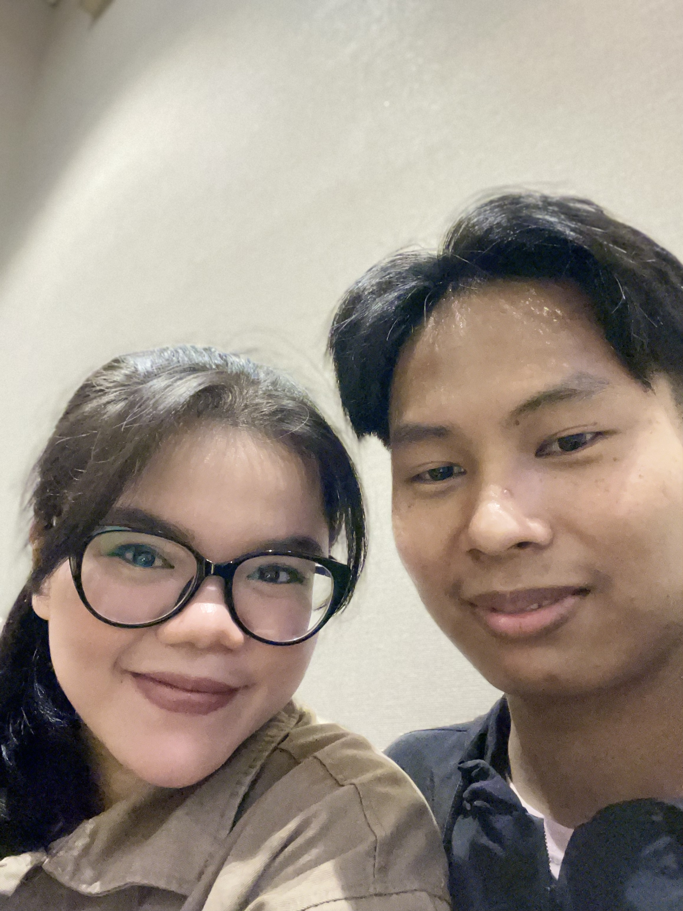
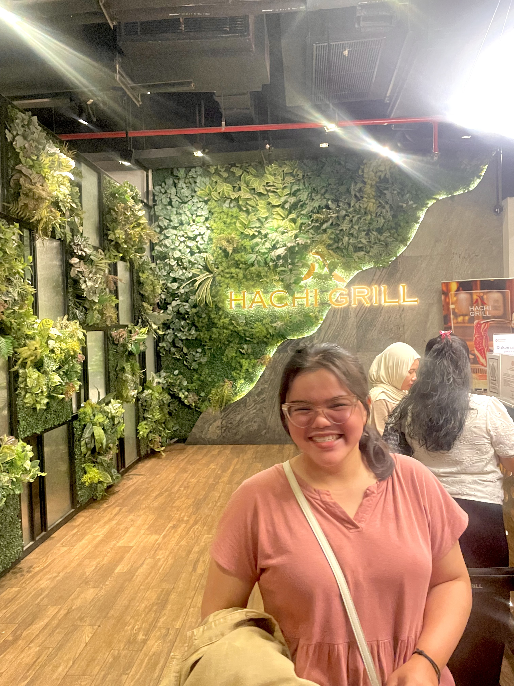
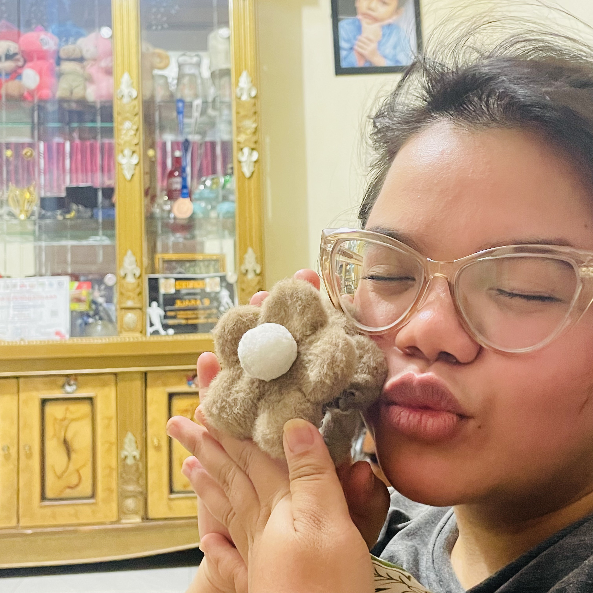
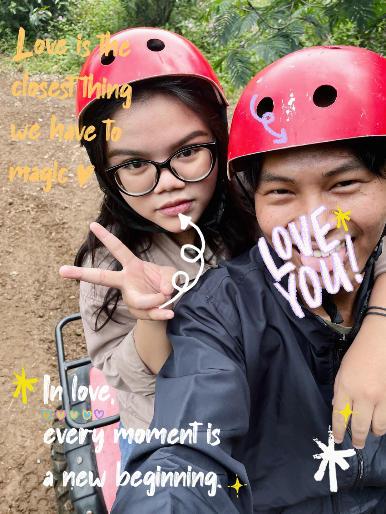

"Happy birthday sayang! 🥳 ga perlu kata-kata puitis yang panjang lebar, aku cuma mau bilang makasih ya udah jadi partner yang seru banget buat dilewatin hari-harinya. Makasih udah selalu jadi pendengar yang sabar dan temen debat yang asik buat aku. Semoga di umur yang baru ini, semua yang kamu mau pelan-pelan kecapai. I'm always rooting for you! 🎂✨"
Birthday Memory Page
Selamat Ulang Tahun, Nandini Ahmadin alias Pacarku yang paling manis! 👑
16 September 2002 • Years of Brightness
Menghitung hari menuju hari spesialmu...
Selected memories
Memori Kita 📸

Momen sederhana yang selalu jadi favorit.

Senyum yang selalu bikin hari terasa lebih ringan.

Potongan cerita kecil yang tidak pernah membosankan.

Hari yang biasa saja, tapi jadi spesial karena kamu.

Satu lagi alasan kenapa aku selalu kangen.
Tawa yang selalu bikin kangen.